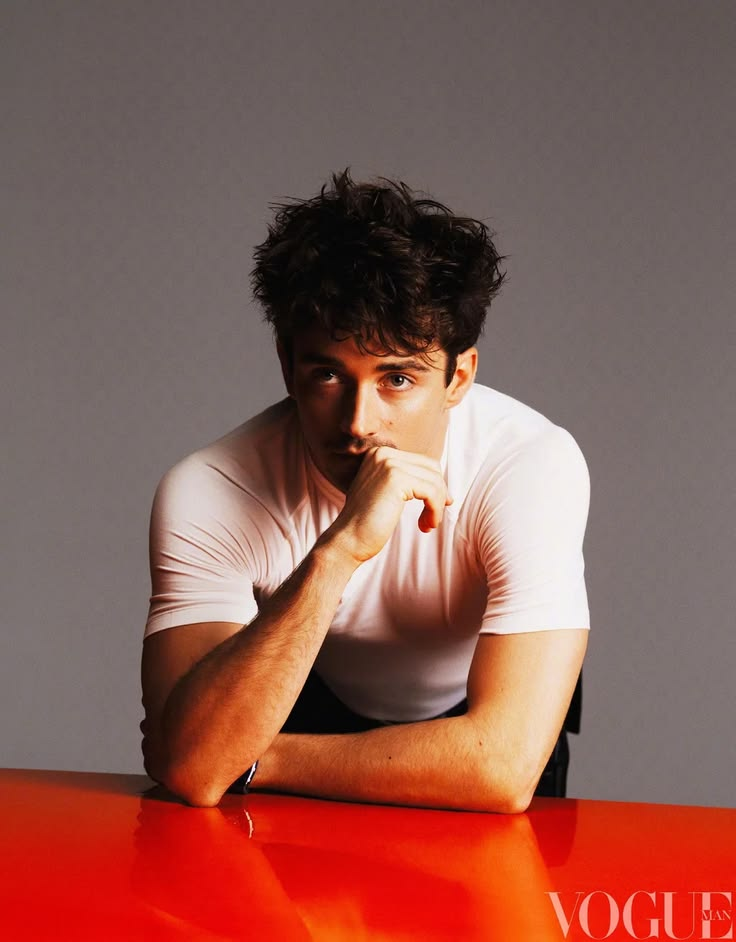

yang belum sempat terucap
Surat
yang Tak
Terkirim
Kata-kata yang tersangkut di tenggorokan — akhirnya menemukan jalannya ke sini.
Suatu malam yang cerah
Kepada kamu,
Aku tidak tahu harus mulai dari mana. Tapi setiap kali aku duduk sendirian, pikiranku selalu berakhir di wajahmu.
Bukan karena aku tidak punya hal lain untuk dipikirkan — tapi karena dari semua hal di dunia ini, kamu adalah yang paling ingin aku pikirkan.
Terimakasih sudah ada, bahkan tanpa sadar kamu sudah membuatku jatuh cinta dengan keberadaanmu.
P.S. kamu cantik hari ini. dan kemarin. dan selalu.

selalu ada di sini
Pagi yang aku ingat betul
Hai, kamu —
Aku pernah membaca bahwa manusia bisa jatuh cinta hanya dalam empat menit jika saling menatap mata.
Tapi bersamamu,
bahkan empat detik pun sudah cukup.
Kamu tertawa dan aku lupa caranya bernafas. Kamu pergi dan aku baru ingat lagi. Ini bukan puisi — ini aduan. Aku complain bahwa kamu terlalu berdampak.
Suatu hari di bulan yang lupa namanya
Untukmu, yang selalu,
Ada bunga yang mekar hari ini di luar jendela. Aku tidak tahu namanya, tapi ia mengingatkanku padamu — indah tanpa perlu menjelaskan alasannya.
Semoga kamu selalu mekar seperti itu. Semoga tidak ada badai yang cukup kuat untuk menundukkan kepalamu.
Dan jika ada — kamu tahu kan, aku di sini.
P.S. ini bukan surat. ini doa.

seperti bunga ini
"Kamu layak mendapatkan cinta yang tidak perlu kamu pertanyakan."
— dari setiap surat yang pernah ada